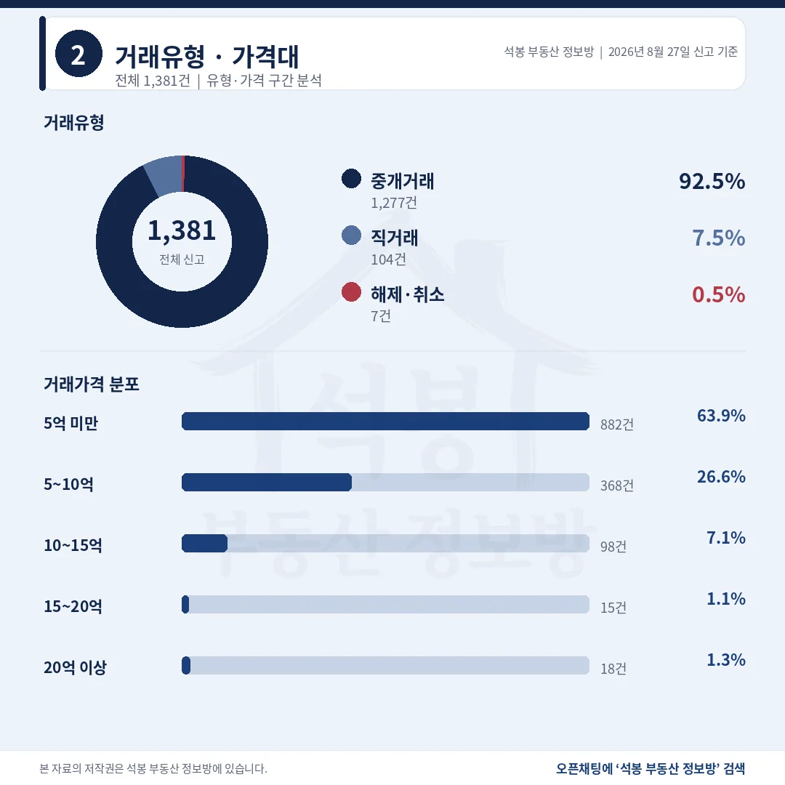
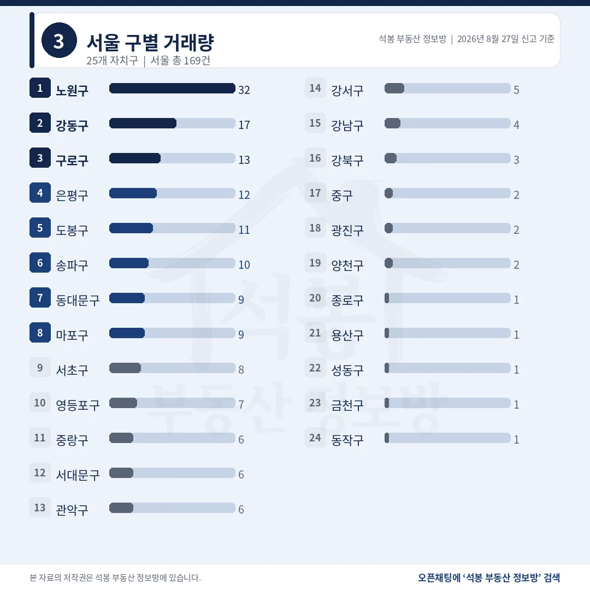
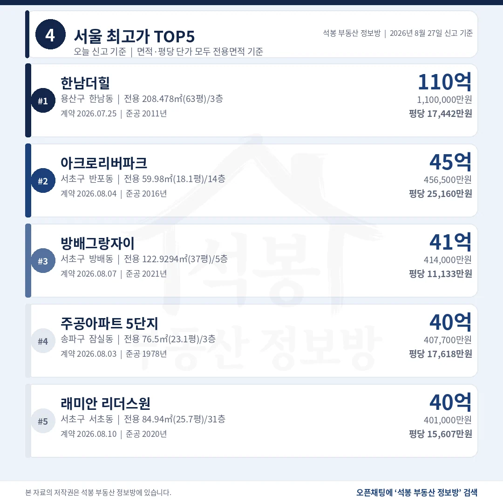
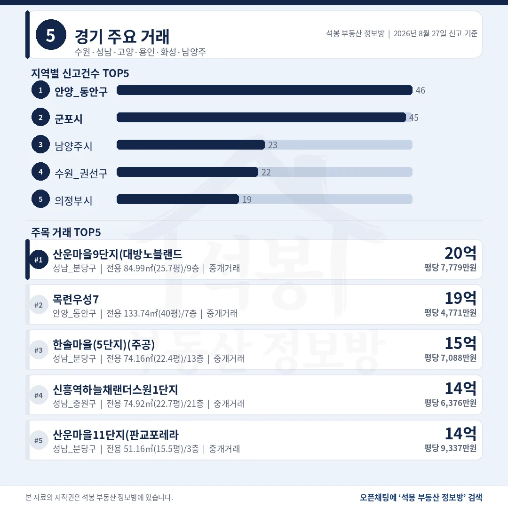
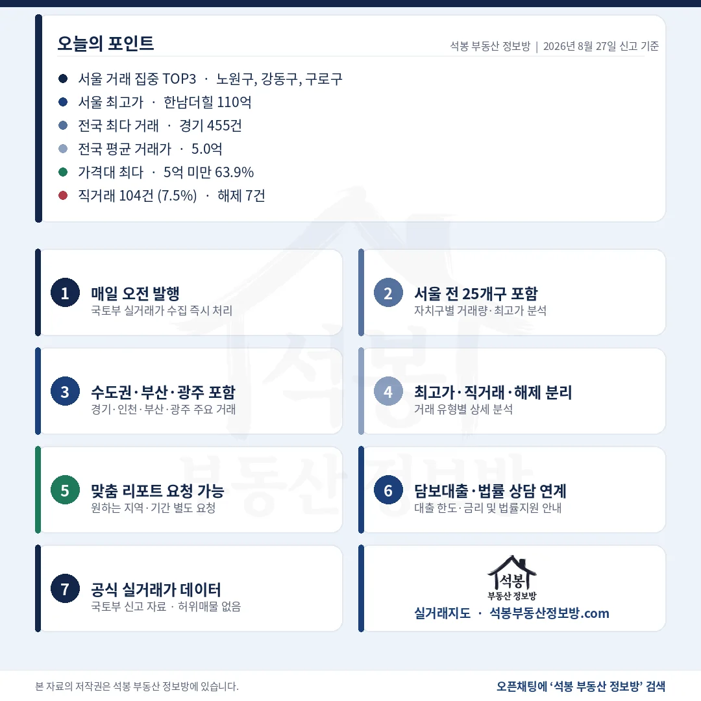

8월 27일 아파트 실거래 신고는 1,381건이었습니다. 수도권이 704건으로 51.0%, 나머지 677건이 지방에서 나왔습니다. 전국 꼭대기는 용산 한남동 한남더힐 110억인데 2위와 64억이 벌어져 있어, 8월 27일 상단은 사실상 한 건이 만든 숫자입니다. 아래 표로 정리했습니다.
단지명을 누르면 그 단지의 실거래 내역과 시세를 바로 볼 수 있습니다. (면적과 평당 단가는 모두 전용면적 기준)
5억 미만 63.9%, 직거래 104건 중 86건이 지방

거래유형·가격대
직거래는 전국 평균 7.5%인데, 그 대부분이 수도권 밖에서 나왔습니다.
거래유형
건수
비중
중개거래
1,277건
92.5%
직거래
104건
7.5%
해제·취소
7건
0.5%
직거래 104건 중 86건(82.7%)이 비수도권입니다. 경남 15건, 경북 14건, 충북 9건 순이고 서울은 3건뿐이었습니다. 전체 신고에서 비수도권 비중이 49.0%인 것과 견주면 직거래는 지방에 한참 더 쏠려 있습니다.
가격대
건수
비중
5억 미만
882건
63.9%
5~10억
368건
26.6%
10~15억
98건
7.1%
15~20억
15건
1.1%
20억 이상
18건
1.3%
전국 중위 3.76억, 서울 중위 9.05억으로 2.4배 차이입니다.
여기서부터는 회원에게 보여드립니다
카카오 로그인 3초면 전문을 읽을 수 있습니다. 무료입니다.
가입하시면 지역 시장조사 보고서(약식)를 2회 무료로 요청하실 수 있습니다.
이미 회원이면 같은 버튼으로 로그인만 됩니다
안양 동안구 46건, 서울 노원구 32건보다 많습니다

서울 구별 거래량
8월 27일 시군구 1위는 서울이 아니라 경기 안양 동안구였습니다.
시도
신고
중위
시도
신고
중위
경기
455건
5.03억
충남
57건
1.38억
서울
169건
9.05억
경북
55건
1.45억
경남
100건
1.97억
충북
54건
1.99억
인천
80건
4.34억
울산
53건
2.55억
부산
77건
3.00억
강원
53건
2.00억
경기 455건은 안양 동안구 46건, 군포시 45건, 남양주시 23건, 수원 권선구 22건 순이었습니다. 안양 동안구는 평촌자이아이파크 6건이 최다인데 전체의 13.0%라 특정 단지 쏠림으로 보기는 어렵습니다.
서울 자치구
신고
중위
비고
노원구
32건
6.20억
최다 단지 2건 쏠림 없음
강동구
17건
13.50억
둔촌·명일동이 상단
구로구
13건
9.05억
서울 중위와 같은 값
송파구
10건
20.75억
건수 6위, 중위 1위
건수 1위 노원구와 중위 1위 송파구는 14.55억 차이입니다. 자치구 순위를 건수로 보느냐 금액으로 보느냐에 따라 서울 지도가 완전히 뒤집힙니다.
한남더힐 110억, 2위와 64.35억 차이

서울 최고가 TOP5
총액 1위와 평당 1위가 다릅니다. 평당은 아크로리버파크가 2만 5천만원대로 가장 높습니다.
단지
위치
거래가
전용면적
평당(전용)
1 한남더힐
용산 한남동
110.0억
208.5㎡ (63.1평)
17,442만 2011년
2 아크로 리버파크
서초 반포동
45.65억
60.0㎡ (18.1평)
25,160만 2016년
3 방배 그랑자이
서초 방배동
41.4억
122.9㎡ (37.2평)
11,133만 2021년
4 주공아파트 5단지
송파 잠실동
40.77억
76.5㎡ (23.1평)
17,618만 1978년
5 래미안 리더스원
서초 서초동
40.1억
84.9㎡ (25.7평)
15,607만 2020년
4위 주공아파트 5단지는 1978년 준공인데 평당 17,618만원으로 1위 한남더힐보다 높습니다. 전용 76.5㎡(23.1평) 한 채가 40.77억이니, 지금 건물의 값이 아니라 잠실 대지에 매겨진 값으로 읽는 편이 맞습니다.
지방 꼭대기는 대구 수성 18.3억, 부산보다 4억 위

경기/인천/부산/대구
건수는 경남 100건이 대구 51건의 배에 가까운데, 상단은 대구가 8.5억 높습니다.
지역
신고
최고가 단지
거래가
평당(전용)
경기
455건
성남 분당 운중동 산운마을9단지
20.0억
7,779만
대구
51건
수성 상동 동일하이빌레이크시티
18.3억
2,734만
부산
77건
해운대 우동 두산위브더제니스
14.3억
4,256만
인천
80건
연수 송도동 송도웰카운티4단지
11.5억
2,144만
경남
100건
창원 의창 중동 중동유니시티4단지
9.8억
3,821만
대구 상단은 전용 221.3㎡(66.9평) 대형이라 총액이 컸을 뿐 평당은 2,734만원으로 부산 해운대(4,256만원)보다 낮습니다. 총액 순위와 단가 순위를 같이 봐야 하는 이유가 여기 있습니다.
20억 위 18건 가운데 5건이 1986년 이전 준공

구간
서울
경기
그 외
20억 이상 18건
17건 (94.4%)
1건 (분당)
0건
15억 이상 33건
29건 (87.9%)
3건
1건 (대구)
서울 17건의 자치구는 송파 5, 서초 4, 강남·강동·영등포 각 2, 용산·성동 각 1이었습니다.
20억을 넘긴 18건을 준공연도로 갈라 보면 결이 하나 드러납니다. 1971년생 여의도 시범 35.5억, 1975년생 삼부 36.0억, 1978년생 잠실 주공5단지 40.77억, 1983년생 잠실 우성4차 27.0억, 1986년생 명일 신동아 24.8억. 다섯 건 모두 준공 40년을 넘긴 단지입니다. 같은 구간에 2024년 준공한 올림픽파크포레온 30.0억이 나란히 서 있으니, 서울 20억대는 새 아파트와 재건축 대기 단지가 절반씩 나눠 갖는 시장이 됐습니다.
8월 27일 숫자에서 가장 조심할 것은 평균입니다. 한남더힐 110억 한 건이 2위보다 64.35억 높아, 이 거래를 넣고 빼는 것만으로 서울 평균이 크게 흔들립니다. 서울 중위 9.05억이 체감에 훨씬 가깝고, 노원구 32건 중위 6.20억과 송파구 10건 중위 20.75억을 나란히 놓고 보는 편이 실제 시장에 가깝습니다.
표 보는 법 · 직거래는 중개사를 끼지 않고 당사자끼리 한 거래입니다. 면적과 평당 단가는 모두 전용면적 기준이고, 평은 ㎡를 3.3058로 나눈 값입니다. 중위 거래가는 그 지역 거래를 금액순으로 줄 세웠을 때 한가운데 값이라 평균보다 체감에 가깝습니다. 건수·비중은 전체 신고 기준, 중위값은 해제·취소 7건을 빼고 계산했습니다.
원자료: 국토교통부 실거래가 공개시스템 (2026년 8월 27일 신고분 기준) · 편집·제작: 석봉 부동산 정보방 · 신고분은 계약일과 신고일이 다를 수 있으며 해제·취소 건이 뒤늦게 반영될 수 있습니다 · 본 자료는 정보 제공 목적이며 투자 권유가 아닙니다.